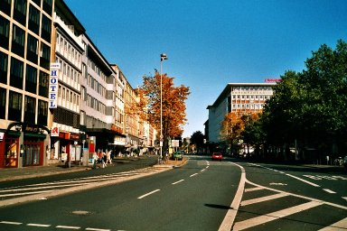
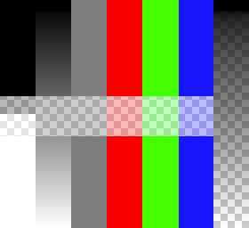
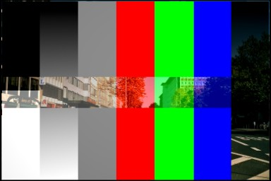
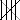
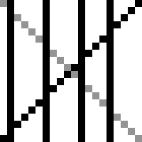
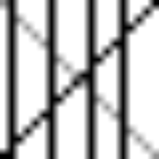

Options¶
Image¶
In the Image panel we tell Blender which source file to use.
- Image
- The Image Data-Block Menu. For the options see Image Settings.
Image Sampling¶
In the Image Sampling panel we can control how the information is retrieved from the image.

Background image. |

Foreground image. |
{kind=link}
{kind=link}
The two images presented here are used to demonstrate the different image options. The background image is an ordinary JPG-file, the foreground image is a PNG-file with various alpha and grayscale values. The vertical bar on the right side of the foreground image is an Alpha blend, the horizontal bar has 50% alpha.

Foreground image with Use alpha. The alpha values of the pixels are evaluated. |

Foreground image with Calculate alpha. |
{kind=link}
- Alpha
Options related to transparency.
- Use
- Works with PNG and TGA files since they can save transparency information (Foreground Image with Use Alpha). Where the alpha value in the image is less than 1.0, the object will be partially transparent and stuff behind it will show.
- Calculate
- Calculate an alpha based on the RGB values of the Image. Black (0, 0, 0) is transparent, white (1, 1, 1) opaque. Enable this option if the image texture is a mask. Note that mask images can use shades of gray that translate to semi-transparency, like ghosts, flames, and smoke/fog.
- Invert
- Reverses the alpha value. Use this option if the mask image has white where you want it transparent and vice-versa.
- Flip X/Y Axis
- Rotates the image 90 degrees counterclockwise when rendered.
Image Sampling panel.
- Normal Map
This tells Blender that the image is to be used to create the illusion of a bumpy surface, with each of the three RGB channels controlling how to fake a shadow from a surface irregularity. Needs specially prepared input pictures. See Bump and Normal Maps.
- Normal Map Space:
- Tangent
- Object
- World
- Camera
- Derivative Map
- Use red and green as derivative values.
- MIP Map
MIP Maps are pre-calculated, smaller, filtered Textures for a certain size. A series of pictures is generated, each half the size of the former one. This optimizes the filtering process. By default, this option is enabled and speeds up rendering (especially useful in the Game Engine). When this option is OFF, you generally get a sharper image, but this can significantly increase calculation time if the filter dimension (see below) becomes large. Without MIP Maps you may get varying pictures from slightly different camera angles, when the Textures become very small. This would be noticeable in an animation.
- MIP Map Gaussian filter
- Used in conjunction with MIP Map, it enables the MIP Map to be made smaller based on color similarities. In the Game Engine, you want your textures, especially your MIP Map textures, to be as small as possible to increase rendering speed and frame rate.
- Interpolation
This option interpolates the pixels of an image. This becomes visible when you enlarge the picture. By default, this option is on. Turn this option off to keep the individual pixels visible and if they are correctly anti-aliased. This last feature is useful for regular patterns, such as lines and tiles; they remain ‘sharp’ even when enlarged considerably. When you enlarge this 10×10 pixel Image  the difference with and without Interpolation is clearly visible. Turn this image off if you are using digital photos to preserve crispness.
Enlarged Image texture without and with Interpolation¶ - Filter
The filter size used in rendering, and also by the options MipMap and Interpolation. If you notice gray lines or outlines around the textured object, particularly where the image is transparent, turn this value down from 1.0 to 0.1 or so.
- Texture Filter Type
Texture filter to use for image sampling. Just like a pixel represents a pic ture el ement, a texel represents a tex ture el ement. When a texture (2D texture space) is mapped onto a 3D model (3D model space), different algorithms can be used to compute a value for each pixel based on samplings from several texels.
- Box
- A fast and simple nearest-neighbor interpolation known as Monte Carlo integration
- EWA (Elliptical Weighted Average)
One of the most efficient direct convolution algorithms developed by Paul Heckbert and Ned Greene in the 1980s. For each texel, EWA samples, weights, and accumulates texels within an elliptical footprint and then divides the result by the sum of the weights.
- Eccentricity
- Maximum Eccentricity. Higher values give less blur at distant/oblique angles, but is slower
- FELINE (Fast Elliptical Lines)
Uses several isotropic probes at several points along a line in texture space to produce an anisotropic filter to reduce aliasing artifacts without considerably increasing rendering time.
- Probes
- Number of probes to use. An integer between 1 and 256. Further reading: McCormack, J; Farkas, KI; Perry, R; Jouppi, NP (1999) Simple and Table Feline: Fast Elliptical Lines for Anisotropic Texture Mapping, WRL
- Area
Area filter to use for image sampling.
- Eccentricity
- Maximum Eccentricity. Higher values give less blur at distant/oblique angles, but is slower.
- Filter Size
- The filter size used by MIP Map and Interpolation.
- Minimum Filter Size
- Use Filter Size as a minimal filter value in pixels.
Image Mapping¶
Image Mapping panel.
In the Image Mapping panel, we can control how the image is mapped or projected onto the 3D model.
- Extension
- Extend
- Outside the image the colors of the edges are extended.
- Clip
- Clip to image size and set exterior pixels as transparent. Outside the image, an alpha value of 0.0 is returned. This allows you to ‘paste’ a small logo on a large object.
- Clip Cube
- Clips to cubic-shaped area around the images and sets exterior pixels as transparent. The same as Clip, but now the ‘Z’ coordinate is calculated as well. An alpha value of 0.0 is returned outside a cube-shaped area around the image.
- Repeat
The image is repeated horizontally and vertically.
- Repeat
- X/Y repetition multiplier.
- Mirror
- Mirror on X/Y axes. This buttons allow you to map the texture as a mirror, or automatic flip of the image, in the corresponding X and/or Y direction.
- Checker
Checkerboards quickly made. You can use the option size on the Mapping panel as well to create the desired number of checkers.
- Even / Odd
- Set even/odd tiles
- Distance
- Governs the distance between the checkers in parts of the texture size.
- Crop Minimum / Crop Maximum
- The offset and the size of the texture in relation to the texture space. Pixels outside this space are ignored. Use these to crop, or choose a portion of a larger image to use as the texture.